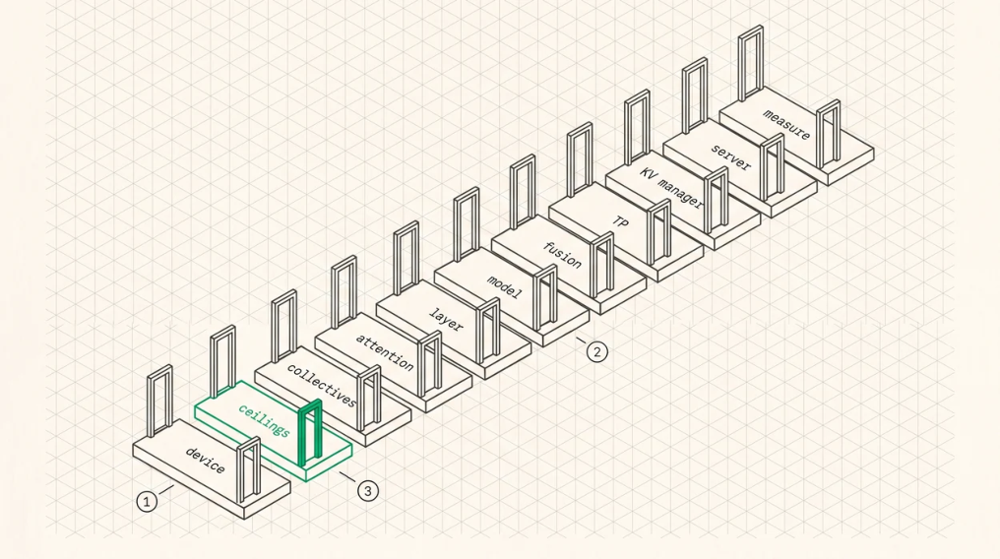

The Build Order
This chapter is the book’s capstone, covering what to build in what order with a gate at each step that has to pass before you move on. It comes from building the stack this book’s low-level measurements come from, and its main claim is that the order matters more than the individual choices .
Why order matters
Each layer’s bugs are invisible until the layer above exercises them, and each layer’s performance is meaningless until the layer below is correct. A team that writes an attention kernel before it can reliably dispatch a trivial one will spend its time debugging dispatch through the attention kernel, which is the hardest possible way to find those bugs.
So the rule is that every layer gets a correctness gate and a performance gate, on real hardware, before the next layer starts.

FIGURE 39.1Eleven phases, each with a gate that has to passO
1Build bottom-up. Each layer’s bugs stay invisible until the layer above exercises them, so a team that writes an attention kernel before it can dispatch a trivial one ends up debugging dispatch through attention.O
2Every phase carries a correctness gate and a performance gate, on real hardware, before the next one starts. O3Phase two is the one teams skip and the one that costs most. Without measured ceilings you cannot tell a good kernel from a bad one, and you will happily optimise a kernel already at 90% of achievable while a misplaced buffer caps the pipeline somewhere else entirely.
Phase 1, talk to the device
Build device open, topology enumeration, VM acquisition, memory allocation and mapping, queue creation, code object loading, packet construction, doorbell, and completion signal.
The gate is dispatching a kernel that writes a known constant to a device buffer, reading it back, and verifying, then dispatching two in sequence and verifying ordering.
Why first? Everything else is built on it, and its failure modes, wrong ioctl size or node index against gpu_id or missing ACQUIRE_VM or a doorbell index off by one, are individually simple and collectively impossible to diagnose through a complex kernel.
Phase 2, establish the ceilings
Build a streaming-read microbenchmark and a GEMM benchmark. The gate is sustained bandwidth within a plausible fraction of spec, 70 to 80%, and GEMM throughput within a plausible fraction of peak.
This phase takes a day and saves weeks, because every subsequent performance number is a fraction of these. Without them you can’t tell a good kernel from a bad one and you’ll optimise the wrong thing.
Phase 3, multi-GPU substrate
Build peer mapping, remote writes, device-side synchronisation flags with system scope, and a smallmessage all-reduce. The gate is a bit-exact all-reduce against a CPU reference across all GPUs, plus a head-to-head against the vendor library across message sizes, reporting where you lose.
Why here rather than later? Peer mapping and memory scopes are foundational and their bugs are subtle, and discovering a memory-scope error while debugging a tensor-parallel model is much worse than discovering it in an all-reduce test.
Phase 4, the attention kernel
Build FlashDecoding with split-KV and a tree combine, then paged KV, then GQA broadcast, then quantised KV. The gate is rel-L2 against an f64 reference below 1e-6 for the kernel, sustained bandwidth above 80% of the streaming ceiling for the split phase, and the combine phase measured separately because that’s where the time goes.
Order within the phase matters too. Correctness first with a naive kernel, then performance, then paging, then GQA, then quantisation, adding one dimension at a time so each failure has exactly one cause.
Phase 5, the layer
Build RMSNorm, QK-norm, RoPE, GEMV and GEMM, SwiGLU, MoE routing and expert FFN, KV append, and residuals, then assemble a decoder layer. The gate is each kernel against an f64 reference, then the assembled layer against an f64 reference of the whole layer at real model dimensions, below 1e-4.
This is where the numerics of Chapter 22 get earned, and you should expect to find at least one of a RoPE pairing error, an ε placement error, an FP16 accumulation in a norm, or a transposed weight.
Phase 6, the model
Build weight loading with validation, embedding, the layer stack, final norm, LM head, on-device sampling, and the decode loop. The gate is per-step logit comparison against an f64 reference across several tokens, below 1e-3, then golden vectors against a trusted external implementation of the same checkpoint.
That external check is the one that catches shared-assumption bugs, and it’s worth substantial effort to arrange even if it means running the reference on different hardware.
Phase 7, remove the host
Build fused multi-head kernels, chained dispatch, and replay or graphs. The gate is per-token latency with host overhead measured as the gap between summed kernel time and wall clock, below 10% of the total.
Do this after correctness and never before, because fused and chained execution is much harder to debug and you want the per-kernel path to remain available as a reference build.
Phase 8, tensor parallelism
Build TP slice planning in the loader, column and row-parallel layers, the two all-reduces per layer, and the fused residual epilogue. The gate is bit-comparable output against the single-GPU model, with the all-reduce share of step time measured and reported.
Phase 9, the KV manager
Build the block allocator, block tables, reference counting, copy-on-write, prefix cache, and eviction. The gate is a fuzz test that allocates, forks, frees, and evicts under memory pressure without ever leaking a block or serving a stale one, plus prefix-cache hit rate on a replayed trace.
Phase 10, the scheduler and server
Build continuous batching, admission with watermarks, chunked prefill, preemption, the API layer, streaming, cancellation, and metrics. The gate is a goodput curve under open-loop load at a stated SLO pair, with preemption rate below a threshold and no leaked KV blocks after a run including client disconnects.
Phase 11, everything else, driven by measurement
Speculative decoding, sparse attention, disaggregation, adapters, multimodality, further quantisation. By this point you have the measurement apparatus to know which of those your workload actually needs, which is the real purpose of the preceding ten phases.
What this order optimises for
Three things, in priority order. Every bug gets found in the smallest system that can contain it. Every performance number has a ceiling to be graded against before it gets quoted. And every layer has a working, debuggable predecessor to fall back to when the optimised version is wrong.
The most common way this goes wrong is skipping Phase 2. Teams that never measure their machine’s ceilings end up optimising kernels that were already at 90% of achievable while a buffer in the wrong memory space caps the pipeline somewhere else entirely, which is precisely the failure Chapters 4 and 6 describe and precisely what cost a real rewrite cycle to find.
Key Concept
Build bottom-up with a correctness gate and a performance gate at every layer, on real hardware. Dispatch before kernels, ceilings before optimisation, collectives before tensor parallelism, correctness before fusion. The order isn’t a preference, it determines whether each bug gets found in a ten-line test or in a ten-thousand-line system.
Exercises
For each phase, name the specific bug class it’s designed to catch and the symptom that bug would produce if it survived to the next phase.
Your team wants to start at Phase 5 using a vendor runtime for Phases 1 to
Which gates can you still apply, which do you lose, and what would you add to compensate?
Build: the capstone. Take a small open model and carry it through as many phases as your hardware allows, keeping a written record of every gate result. Report the phase where your stack’s performance first fell below 50% of its measured ceiling, and what fixed it.